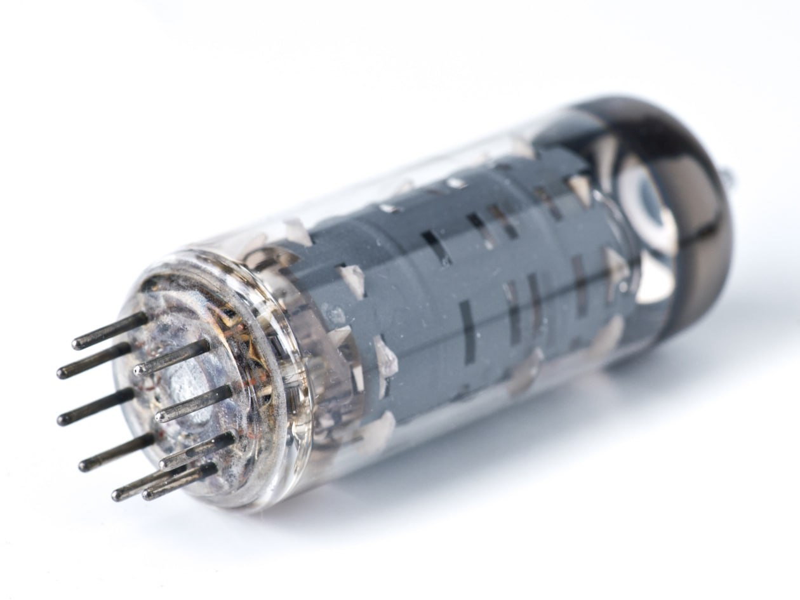
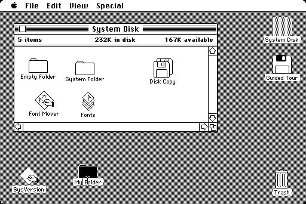
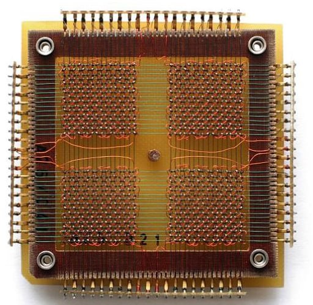

·SEGUNDA GENERACIÓN: 1956-1964
-Se sustituyen las valvulas de vacío por otros elementos más pequeños
y que apenas se calientan los transistores. Así los ordenadores pasan
a ser más pequeños, se calientan menos y son más fiables.
-Transitores.
-Nacen los primeros sistemas operativos.
-Los ordenadores comienzan a utilizar memorias de núcleo de ferrita
que sustituye a las tarjetas perforadas y hacen los cálculos más
rapidos.
-Aparecen los almacenamientos magnéticos, que aumenta el volumen de
datos almacenados.


